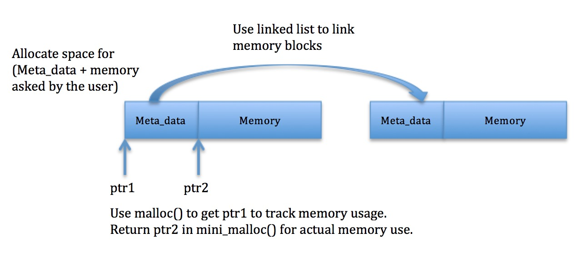

Learning Objectives#
The learning objectives for Mini Memcheck are:
- Using metadata for memory bookkeeping
- Memory management and linked lists
- Learning what Valgrind does
- Preparation for the Malloc MP
Overview#
For this lab, you will be implementing a small version of Valgrind called mini_memcheck. Valgrind is a great tool for monitoring memory usage, and you have likely used it earlier in this class. Your version will print out a summary of the memory leaks in a particular C program. This lab is meant in part as preparation for your Malloc MP, introducing some topics and techniques which you will find helpful there.
Main Concepts#
The main concept of this lab is that we can track each block of memory using some extra space before each allocation (called metadata). We have provided you with a struct meta_data in mini_memcheck.h. The metadata is set up as a linked list of nodes which store information for each allocated block. Each node stores the amount of memory requested, the filename and location of the instruction that made the request, and a pointer to the next allocated block.
Here’s an illustration:

When the program is about to exit, we can look at this metadata list to see what the user hasn’t freed. These are your memory leaks.
If you feel that you need a refresher on linked lists or other prerequisite concepts, feel free to ask a CA or TA one-on-one.
mini_memcheck.c#
We have set up mini_memcheck to dynamically replace every call to malloc, calloc, realloc, and free in the user’s program with a call to mini_malloc, mini_calloc, mini_realloc, and mini_free, respectively. You will be implementing these four functions in order to track the memory the user allocates.
Inside mini_memcheck.c, it is safe to call the real versions of malloc and related functions. You should not be writing your own implementation of malloc using sbrk or related system calls.
See the mini_memcheck.h header file for details.
Global Variables
In addition to the four functions above, you’ll need to maintain the following global variables:
-
head: a pointer to the head of a linked list storing all the metadata corresponding to allocated memory blocks -
total_memory_requested: stores the total number of bytes of memory requested by the user throughout the lifetime of the program (excluding metadata) -
total_memory_freed: stores the total number of bytes of memory freed by the user throughout the lifetime of the program -
invalid_addresses: stores the number of times the user has tried toreallocorfreean invalid pointer
Since we keep track of this data, we can show the user how much memory they’ve allocated, just like the real Valgrind. We can also find out how much memory a user might be leaking, by subtracting total_memory_freed from total_memory_requested.
If you look in mini_memcheck.h, you’ll notice that these are declared as extern variables. This allows variables to live somewhere else beside the line where you are ‘declaring’ them, pushing the responsibility of providing a real location in memory for these variables elsewhere and letting the linker resolve the variable name to where memory is actually reserved. This link has a nice explanation of how to use this. In order to prevent your code from crashing, you will have to declare these variables as globals in mini_memcheck.c.
Testing#
You’ll want to test your mini_memcheck thoroughly.
We’ve provided you with a test.c file that you can put test cases in. Running make will generate a ./test executable alongside mini_memcheck. You can use it like the regular Valgrind:
./mini_memcheck ./test
The output should look familiar!
Note that we always build ./test with debugging symbols (gcc -g), so mini_memcheck can find the line numbers corresponding to memory leaks.
To debug mini_memcheck itself, you can use gdb like usual. Use make debug to generate a version of mini_memcheck with debugging symbols:
gdb --args ./mini_memcheck-debug ./test
Warning: printf()
Be careful with printf in Mini Memcheck! By default, stdout is buffered, so printf calls malloc internally to create a buffer.
If you call printf inside of mini_malloc, it will allocate its buffer using the real malloc (since calls to malloc inside mini_memcheck.c use the real version), but then free it using your mini_free since the cleanup happens outside of mini_memcheck.c. As you can imagine, this results in unexpected behavior.
Instead, you can use fprintf(stderr, ...), which is unbuffered, or use write, but the easiest solution may be to turn off buffering for stdout:
setvbuf(stdout, NULL, _IONBF, 0);
Warning: extra free() call
Note that there will be some extra calls to your mini_free function at the end of the program.
This is an unfortunate side effect of how we implement mini_memcheck internally. In mini_hacks.c, we call a cleanup function defined in the C library (__libc_freeres) at the end of the program, which calls free several times to deallocate any internal buffer created by the C library. Here is an example of what the backtrace looks like in gdb:
Breakpoint 1, mini_free (payload=0x0) at mini_memcheck.c:142
(gdb) bt
#0 mini_free (payload=0x0) at mini_memcheck.c:142
#1 0x00007ffff7bd3d4a in free (ptr=0x0) at mini_hacks.c:193
#2 0x00007ffff797c380 in __GI___libc_freeres () at set-freeres.c:42
#3 0x00007ffff7bd44ba in finalize () at mini_hacks.c:334
#4 0x00007ffff7bd3fa0 in print_leak_info () at mini_hacks.c:365
...
This should not affect your implementation of mini_free. However, do be aware of the extra free calls when you’re debugging your program, just so that you’re not confused about where they’re coming from.
Example#
Here’s a basic test case to check your progress.
Say you had the following in your test.c file:
#include <stdlib.h>
int main() {
void *p1 = malloc(30);
void *p2 = malloc(40);
void *p3 = malloc(50);
free(p2);
return 0;
}
mini_memcheck’s output should look like this (of course, your process ID and addresses might be different):
==25219== Mini-Memcheck
==25219==
==25219== LEAK REPORT:
==25219== Leak origin: main (test.c:5)
==25219== Leak size: 50 bytes
==25219== Leak memory address: 0x1009790
==25219==
==25219== Leak origin: main (test.c:3)
==25219== Leak size: 30 bytes
==25219== Leak memory address: 0x10096f0
==25219==
==25219== Program made 0 bad call(s) to free or realloc.
==25219==
==25219== HEAP SUMMARY:
==25219== Total memory requested: 120 bytes
==25219== Total memory freed: 40 bytes
==25219== Total leak: 80 bytes
Notice that leaks are reported most-recent-first. This is because we insert new metadata at the head of the linked list.
Other Programs
You can also run mini_memcheck on other programs, like echo:
$ ./mini_memcheck echo 'Hello, world!'
==19506== Mini-Memcheck
Hello, world!
==19506==
==19506== Program made 0 bad call(s) to free or realloc.
==19506==
==19506== HEAP SUMMARY:
==19506== Total memory requested: 1068 bytes
==19506== Total memory freed: 1068 bytes
==19506== No leaks, all memory freed. Congratulations!
It should work on most standard utilities, but just be aware that it won’t work on everything. You’ll notice it may generate different output than Valgrind or may even crash when run on complex software like python. This is okay; writing a memory checker is hard! You only need to implement what we’ve described above and in mini_memcheck.h.
Optional Fun: Sentinel Value!#
This part of the assignment in this section is not graded. However, sentinel value is a pretty cool concept and we encourage you to try to implement it.
So, suppose that our users of mini_memcheck are terrible at coding. They wrote past the end of their allocation (buffer overflow) and corrupted the memory beyond what’s allocated to them. Can we detect this kind of memory corruption and warn them? The answer is yes, by using sentinel value!
Sentinel value is a chunck of pre-defined bits at the end of an allocated memory. In other word, each allocation would look like this:
[meta_data][---actual data---][sentinel_value]
On every operation, we would check that the sentinel value is still the same as it was pre-defined. If the sentinel value has changed, then we know for certain that the user has corrupted memory.
In your mini_memcheck, you will use the magic number 0xCAFEBABE for sentinel value. (Why x0CAFEBABE?)
Implementation:
- Add the bits
0xCAFEBABEto the end of every allocation. (Do you need to do it forrealloc?) - Check if the sentinel value of a previously allocated buffer has changed in
mini_reallocandmini_free. - If so, print out a warning to the user with
fprintf(stderr, ...). (Do not print to stdout!)
If you want to test out your implementation, you can add the following code to your test.c and see if you get any warning when running ./mini_memcheck ./test:
char* ptr = malloc(10);
*(ptr + 10) = 'a';
free(ptr);
Behind the Scenes#
This section describes some details of how we’ve implemented mini_memcheck. You are encouraged, but not required, to understand this.
We compile your mini_ functions, along with some extra code from mini_hacks.c, into a shared object called mini_memcheck.so.
mini_hacks.c has two main jobs:
- Create wrappers around
mallocand the other functions to make sure they use your replacement functions when the user’s program calls them, while still letting you use the real versions within your code - Print out leak info at program exit
The actual ./mini_memcheck program is implemented in mini_main.c. When you run ./mini_memcheck ./test, we use an environment variable called LD_PRELOAD to run the ./test program using the code in mini_memcheck.so. Essentially, it replaces normal references to the built-in malloc with references to our version.
“But,” you may ask, “how do we call the real version of malloc if we’ve replaced it with our own version of it?” The trick is a function called dlsym, which allows us to bypass LD_PRELOAD and ask for a function pointer to the real malloc. This is all handled within mini_hacks.c.